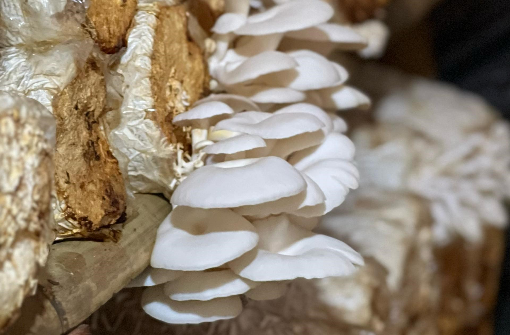

Mari Hidup Sehat dengan Mengonsumsi Jamur Tiram
Bukan cuma jamur, ini gaya hidup. Segar, sehat, dan siap ubah caramu makan. Fresh, delicious, end healthy.
Beli SekarangBukan cuma jamur, ini gaya hidup. Segar, sehat, dan siap ubah caramu makan. Fresh, delicious, end healthy.
Beli Sekarang
Kami percaya makanan sehat dimulai dari bahan yang alami. Jamur tiram yang kami tanam dipanen setiap hari agar selalu segar saat sampai ke anda.
Tanpa bahan kimia, tanpa ribet, cukup jamur berkualitas yang siap diolah jadi makanan lezat untuk keluarga.
Hubungi kami langsung melalui WhatsApp untuk pemesanan atau pertanyaan.
📞 +62 857-8381-8445